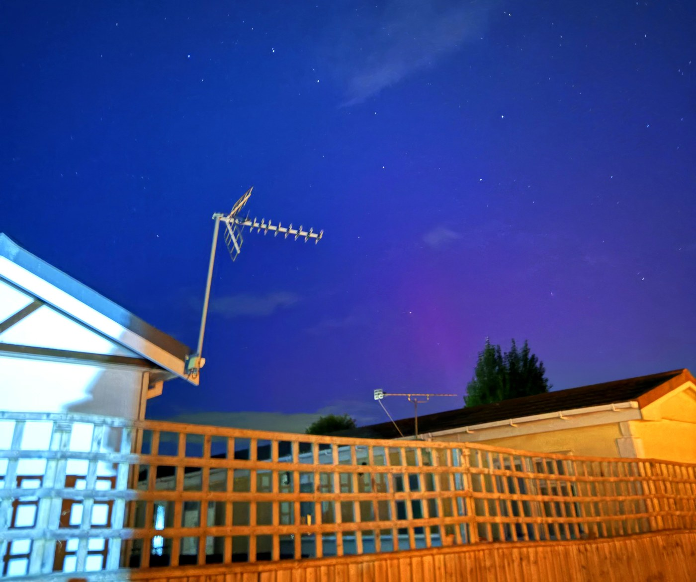
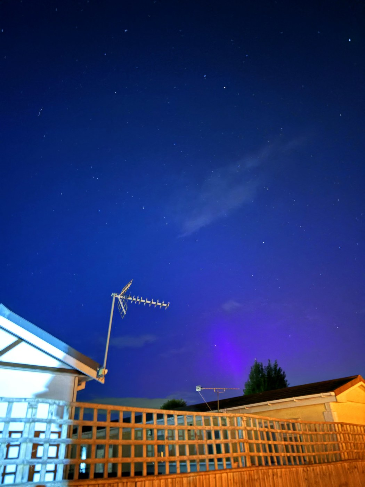
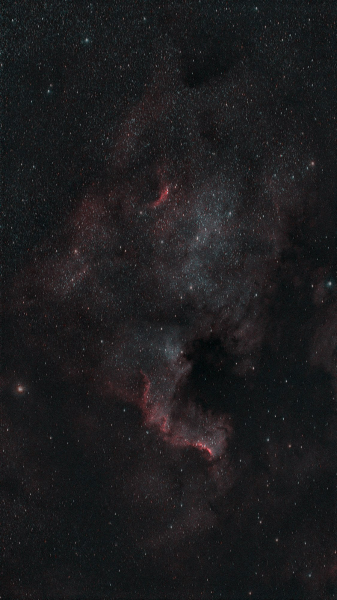
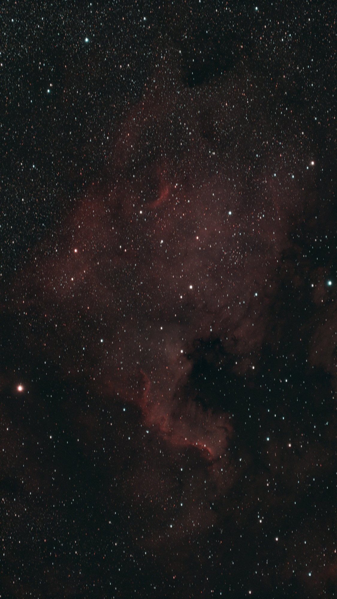
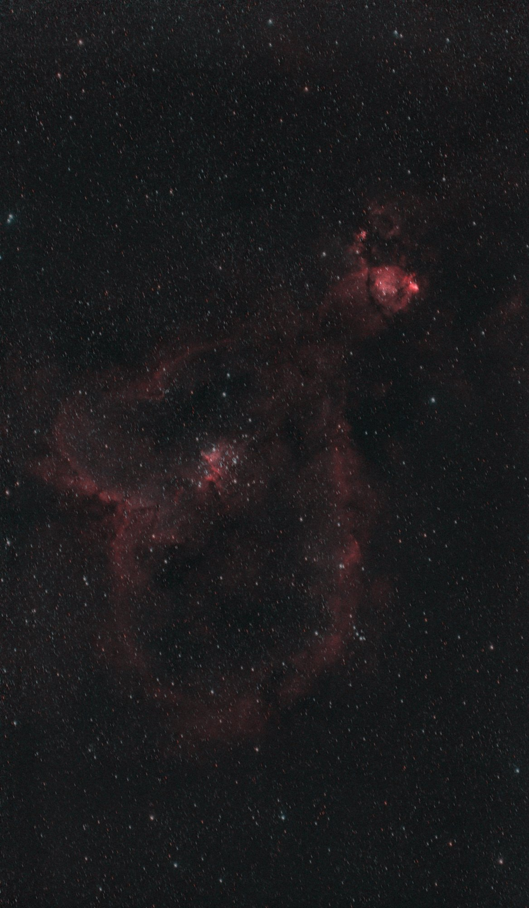
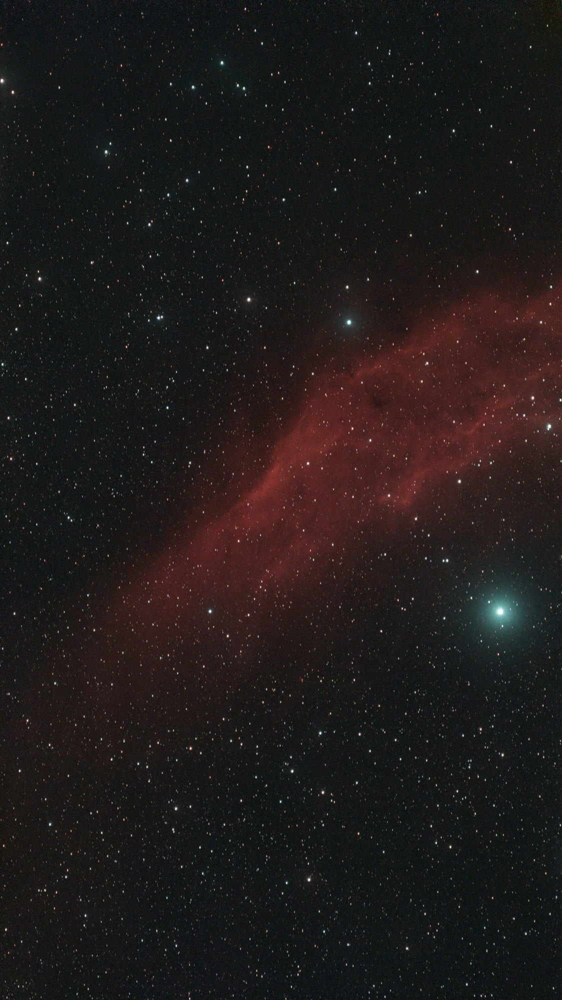

Night log · Saturday 10 October 2026
Three nebulas and a Kp 7 aurora
The plan
Scope Nights rated Saturday "Fair": clear for the first few hours after dark, then cloud from around 22:00. A short window, and a chance to add something new to the portfolio rather than more of the Veil.
The planner picked the North America Nebula (NGC 7000) in Cygnus. Early in the evening it is almost overhead, at 83°, well clear of the house. At about 2° across it fills the S30 Pro's field. It's bright in hydrogen-alpha, so a short session still shows its shape: the glowing "continent" and the dark dust lane of the "Gulf of Mexico". If the sky stays clear past 22:00, the plan moves on to the Heart Nebula to add to the first night's frames.
- 19:45–22:15
- NGC 7000 North America
- Settings
- 30 s · gain 200 · dual-band
- 22:15–02:00
- IC 1805 Heart, if clear
- 02:20–05:30
- NGC 1499 California, added on the night · 20 s
- Moon
- New, 0%
- Mount
- TH10 wedge, EQ
An aurora, a little too low
Partway through setting up, the evening changed. A burst of material from the Sun reached Earth earlier and harder than forecast. NOAA had expected Kp 4 to 5 for the evening, but by 19:00 the geomagnetic index had reached Kp 7, a strong (G3) storm, and AuroraWatch UK went to red. Claude set up a watcher that sent a Telegram message whenever the storm strengthened or eased.
From the garden it stayed hidden. At this latitude a Kp 7 aurora sits low in the north, mostly within 10 to 30° of the horizon, and the garden's measured skyline blocks the north up to about 20 to 30°. Phone shots from the garden and an upstairs window showed only the orange dome of the town's streetlights. That isn't how it looked on 10 May 2024, a Kp 9 storm whose aurora reached overhead.
A friend, Joe “StarGazer6.2” H, had a clear view to the north-west and better luck. At 19:43, near the peak, his 2-second iPhone exposure caught an excellent purple pillar rising behind a tree, over a faint purple glow along the horizon. As is usual this far south, it was barely visible by eye and obvious to the camera. The pink is the red oxygen emission high in the atmosphere, blending with the blue of the twilit sky. The image below has been enhanced to bring the aurora forward. The whole frame has a light saturation boost, and the pillar’s own purple has been made a little richer. Around it, the faint purple glow has been lifted by adding a little red to the sky, fading smoothly with distance from the aurora. Nothing has been painted in.
The purple pillar
Joe’s purple pillar is one auroral ray. Aurora forms when particles from the Sun travel down Earth's magnetic field lines and strike the upper atmosphere. The light they produce traces those field lines, so it appears in vertical rays and curtains rather than as a smooth glow. A single ray can be hundreds of kilometres tall. Seen from Oxfordshire, the aurora is several hundred kilometres to the north, over Scotland and beyond, so the Earth's curve hides the bottom of the ray and only its top shows above the horizon.
The top is also where the colours come from. The familiar green comes from oxygen at around 100 to 150 km, and that part is below the horizon here, except for a faint hint of green right at the treeline. Higher up, at 200 to 400 km, the thinner oxygen gives off a deep red instead. That is why aurora seen from southern England is almost always red or pink rather than green.
The purple has another cause. At 19:43 the Sun was only a little below the horizon, so the very top of the atmosphere, hundreds of kilometres up, was still in sunlight. In sunlit air, nitrogen molecules ionised by the aurora absorb and re-emit sunlight at violet-blue wavelengths, around 391 and 428 nm. Blended with the oxygen red, that gives the magenta-violet in the photo. Sky-watchers call this a sunlit aurora, and it mostly shows up in the first hour or two after dusk, which is exactly when this was taken.
Rays like this come and go within minutes as the storm pulses. The eye sees almost none of the colour, because our night vision is colour-blind. A phone camera's few seconds of exposure collects enough light to show it.


Results
Cloud came and went all night, and the run paused itself whenever the star count dropped. The forecast said cloud from 22:00, but the gaps kept coming, so at 02:00 the scope still had full battery and a second plan was added for the California Nebula until dawn. By the time it parked at 05:44 it had gathered nearly four hours of light across three targets.
- NGC 7000
- North America · 150 × 30 s · 75 min
- IC 1805
- Heart · 166 × 30 s · 83 min
- NGC 1499
- California · 231 × 20 s · 77 min
- Total
- 547 frames · 3 h 55 min
North America Nebula
All 150 frames made it into the stack, two and a half times the 59 in the first version posted on the night. The nebula is bright in hydrogen-alpha, and the main shapes are all there: the "continent" glowing red, the dark dust lane of the "Gulf of Mexico", and the sharp, bright edge of the Cygnus Wall at the bottom, where the nebula's gas is being sculpted by hot young stars.


Heart Nebula
On night one the Heart got 35 minutes. Tonight's 83 minutes show much more of it: the whole heart-shaped shell of glowing hydrogen, the young cluster Melotte 15 at its centre whose stars light it up, and the bright knot of the Fish Head Nebula (NGC 896) above it.


California Nebula
A new target, added during the night. The California Nebula is a long cloud of hydrogen in Perseus, lit by the hot blue star Menkib (Xi Persei), the bright star near it in the frame. It is bigger than the S30 Pro's field, so the "state" runs off the right-hand edge. A mosaic would fit it all in. Natural colour suits it best. Removing the stars left a dark hole where Menkib was, so there's no star-reduced version.

What went wrong, and what changed
The Seestar fell asleep while the run waited for darkness after setup, because nothing talked to it for 45 minutes. It now gets a quick status check every minute while it waits.
The bigger problem showed up at full resolution: the stars are slightly trailed, all in the same direction. On the wedge the mount's tracking drifts by about 1.5 arcminutes a minute, so each star smears a little during the exposure, roughly 3:1 at 30 seconds and 2:1 at 20 seconds. That is why the California run used 20-second frames. The trailing also confused the processing at first. Siril found too few round stars to line the frames up, and aligned only 2 of the North America frames and 29 of the Heart. Siril now chooses the sharpest frame as its reference and accepts slightly elongated stars, and nearly every frame lines up. The real fix is the tracking, and finding the cause of that drift is the job for the next clear day.